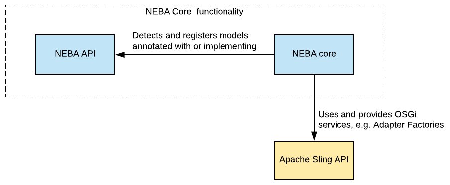
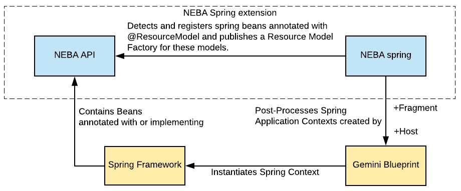
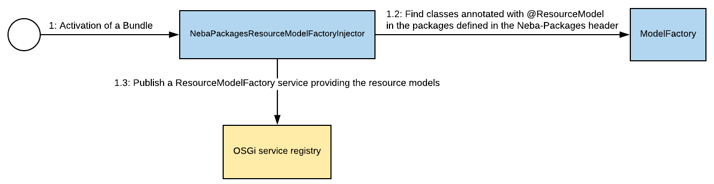
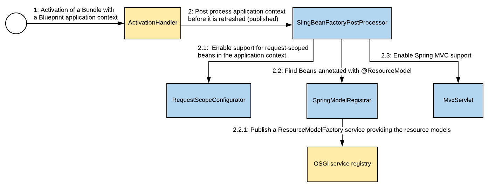
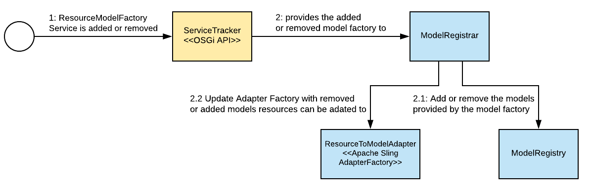

Documentation
Getting started
Get started with NEBA with two simple steps:
Step 1: Download and install NEBA
Install the delivery package and add a dependency to the NEBA API to your project.
Step 2: Add the Neba-Packages header to your bundle(s)
Add a comma-separated list of packages containing your NEBA models to your bundle, e.g. using maven:
That's it - you may now proceed to Write resource models. You can use the sample project as a starting point
The NEBA sample project
The NEBA sample project demonstrates both the Neba-Packages based core functionality and using the Neba Spring integration.
View the NEBA sample project on GithubWorking with @ResourceModels
What is a resource model?
A Resource model is a type safe representation of a Sling resource, written as a Java class. The data of a resource can be mapped to the resource model, similar to an ORM mapping the data of a relational DB to an entity class. In addition, resource models can be injected with collaborators, e.g. OSGi services. Resource model instances are obtained by adapting a resource to the type or super type of the resource model. A resource model and the Sling resource types it represents is defined using the @ResourceModel annotation.
Resource models are useful for explicitly modelling complex resource relationship semantics and functionality belonging to specific resource types and the data of the corresponding resources.
Resource models are not useful for simply exposing the properties of the current resource in a view - here, simply using Sling's generic ${properties} or
${resource} representation is recommended.
Dependency injection and content-to-object mapping
NEBA makes a clear distinction between IOC (dependency injection) and content to object mapping and makes sure that these two concepts are not mixed. The bottom line is: Collaborators are injected with @Inject (or other means, when models are managed by a Spring application context), and content is injected using NEBA's dedicated annotations.
Injecting OSGi services with NEBA core
When the model does not stem from a Spring application context, NEBA exclusively injects OSGi services into fields or a constructor annotated with @Inject.
These services can be filtered using the @Filter annotation.
NEBA also supports constructor injection in the same fashion:
For resource models that do not stem from a Spring Application Context, NEBA supports either the default constructor or exactly one constructor annotated with @Inject, with the @Inject constructor taking precedence.
Optional dependencies
By default, service dependencies via @Inject are mandatory. Obtaining a resource model will thus fail if the respective OSGi service is unavailable.
Optional Service dependencies can be declared using java.util.Optional. This is supported for both field and constructor injection:
Injecting multiple instances of the same service
NEBA allows injecting multiple instances of the same service if a @Filter annotation is present (shortly, this will also be supported without a @Filter annotation).
Resources, resource types and resource models
Background: How NEBA uses resource types in Sling
The Sling Web Framework is a REST architecture implementation. Consequently, it treats each thing it works with (every piece of content, every script, servlet) as a Resource. Resources are typed using the property sling:resourceType. Resource types - very much like types in many other languages - also support inheritance by means of a sling:resourceSuperType attribute.
Resource types are used by Sling to determine the view(s) that shall be used to render the resource. It does so by adding a prefix such as /apps or /libs to the resource type and checking whether it finds views for the resource in the corresponding directory.
Furthermore, any content stored in the JCR is represented by a javax.jcr.Node. Nodes are strongly typed. They always possess a primaryType as well as an arbitrary number ofmixin types. Both the primary type and the mixin types can have super types.
In order to provide a JAVA model for a resource, they are thus associated with either the resource's sling:resourceType or the resource's Node type(s). NEBA represents this association using the @ResourceModel annotation.
Let's assume we need a simple JAVA model for a sling component called "carousel". The carousel has the sling:resourceType "foundation/components/carousel". The component has the following properties:
Create the following class in your bundle package (i.e. within or below the "my.project.models" package)
The resource type given in the @ResourceModel annotation does not have to be the exact resource type of the resource. One may also specify any resource super type of the resource, primary node type or mixin type. for example, the resource super type of the carousel could be "foundation/components/list". Using this resource type in a @ResourceModel would work, too. This way, one can provide general models for super types, and more specific models for derived types, e.g. a generic model for pages and a more specific model for specific page types.
Background: The @ResourceModel annotation
Classes annotated with @ResourceModel are automatically detected by NEBA if their package is listed in the "Neba-Packages" bundle header. For each detected model, NEBA registers the defined resource types and node types supported by the model and automatically registers an Adapter Factory supporting the adaptation of resources to the model.
Once a bundle with NEBA models is active, all of its models appear in the NEBA model registry (/system/console/modelregistry) in the sling console. If they are not visible in the model registry, the bundle either failed to start or is missing the "Neba-Packages" header.
Using models in views
Resource models can be automatically provided in either HTL (Sightly) or JSP views using the neba.js or neba:defineObjects tag library, respectively:
Both are looking up the most specific model for the current resource. By default, neba.js and neba:defineObjects publish the model into the scripting context under the key "m". In both examples above, one can access the model like so:
The most specific model is the one who's type attribute points to the most specific type within a resource's type hierarchy. For example, if the resource has the type "cq:Page" and the super type "nt:base", a model for "cq:Page" is more specific than one for "nt:base". If there is more than one most specific model, e.g. two models for "cq:Page", neba.js and the neba:defineObjectsTag will not provide the model automatically. In such cases, one can either explicitly adapt to the desired model type or specify the desired model's name as displayed in the model registry, e.g.:
However, one may also explicitly adapt the current resource to the model, like so:
Mapping properties and resources to models
NEBA automatically maps the properties of a Resource to fields named like the properties, unless the field is annotated with @Unmapped, is static or final. Additional semantics, such as mapping referenced resource, children or specific paths are supported by a an extensible set of annotations. Following, we will map the properties of the following resource:
Let's select "pages", "playSpeed", "transTime" and add them to the model:
The properties of the model may then be rendered like so:
This will create the following output:
Annotations for resource to model mapping
Background: How NEBA supports meta-annotations
The following annotations are also supported as meta-annotations, i.e. a custom annotation annotated with any of the annotations provided
by NEBA is treated as if the corresponding NEBA annotations were used directly. For example, a custom @Siblings annotation may
combine NEBA's @Path and
@Children to retrieve the siblings (same-level resources) of a resource:
Resolving references with the @Reference annotation
In the above example, playSpeed and transTime are Strings, whereas one would expect them to be integers. This is simply because these values are defined to be Strings in the repository. Had they been defined as integers, we could also retrieve them as integers. Also, "pages" is an array of Strings and not the actual resources the "pages" property is referring to. Here, NEBA provides the @Reference annotation to declare that a field contains one ore more references to other Resources:
Now, the expression ${m.pages} yields:
When NEBA detects a @Reference annotation, it assumes that the value of the corresponding property (here: "pages") is one or more resource paths. It obtains the corresponding resources and provides them as a Collection (or a single resource, if the annotated field is not a collection type). However, you are not limited to using "Resource" for your reference. The following also works, provided there is a "Page" model the referenced resources can be adapted to:
Here, NEBA loads the resource referenced in the "pages" property, adapts each resource to "Page" and returns a collection containing the resulting non-null Page instances.
One can also alter the path of the reference prior to resolution by appending a relative path segment to the reference(s), like so:Here, instead of resolving and adapting the paths in the property "pages" directly, "/jcr:content" is appended to all of the paths prior to resolution.
Resolving children with the @Children annotation
While the resource hierarchy is conveniently navigable using the generic Resource model (i.e. using getChildren()), one often has to subsequently adapt the children. Consequently, the children are adapted in a loop, including a null check for each adaptation result. Here, NEBA offers another powerful annotation: @Children. This annotation can be used on a Collection, Set or List-typed field (similar to the @Reference-annotation). Then, NEBA injects the children of either the current resource (if no other annotation is present), or of the resource defined by the @Reference or @Path of the field:
Of course, NEBA will also automatically adapt the children to the generic type of the list - for instance, you could write:
@Children can be combined with both @Reference and @Path to fetch the children of a referenced resource or a resource designated by a specific path, i.e. the following works as well:
Furthermore, one may specify a relative path to be resolved below every child using the property "resolveBelowEveryChild" instead of returning the direct children of the designated resource. For example, one could obtain all nodes called "jcr:content" underneath all children of the current resource, like so:
Using the @Path annotation to specify property names or resource paths
Lets assume a property called "jcr:lastModified" shall be mapped to a model.
This will not yet work - NEBA maps the properties by name, in this case the name contains characters ("jcr:") unsuitable for a field name. In this case, use the @Path annotation to specify the property from which the field's value shall be obtained:
Now the property is mapped! @Path has even more interesting features, for instance allowing absolute and relative paths:
Furthermore, one can use placeholders in the @Path to dynamically provide path elements:
To resolve the ${language} placeholder, provide an OSGi service implementing the PlaceholderVariableResolver interface. Such services will be asked to resolve the value for a placeholder key, i.e. "language" in the above example. A hardcoded example:
The @This annotation
Fields annotated with @This are injected with the current resource, or anything the resource is adaptable to. This annotation is thus not just useful for accessing the underlying Resource but has significant architectural value. Using @This, one may split up a model into multiple aspects and compose them dynamically, like so:
One can also use the @This annotation to obtain the Resource that is mapped onto the model:
Models for crosscutting concerns
A @ResourceModel is not restricted to sling:resourceType's - one can also map it to the JCR primary node type or any of the mixin types of a Node. For example, let's assume that there is a requirement to implement a custom access protection of arbitrary content. In addition, a content manager may configure access restriction to any content (e.g. pages or a binary assets). In this case, neither the resource types nor the content paths to which the protection applies are known in advance. Here, using a mixin node type could help. A mixin can be assigned to any node at any time anywhere in the content hierarchy. It can define additional properties that can be set on the node, such as a set of properties defining how an access restriction is configured. Let us assume a protected content is assigned the mixin "mix:AccessRestricted". One may then create a model for any access restricted content like so:
Finally, one can adapt to this model (e.g., in a view or filter) to determine whether the corresponding resource has restricted access, and what the restrictions are.
Further reading: JCR repository spec, administering node types.
Lazy loading
Reading data into an object graph - such as NEBA models - bears the risk of loading more data than required for rendering. Especially when there is a significant amount of repository content, being able to load models on demand rather then up front is crucial for building high-performance implementations. To achieve this, NEBA enables lazy-loading model relationships.
Lazy loading collections of references
All collection-typed references are automatically provided as lazy-loading proxies, for example in case of @Children and @Reference collections:
The contents of these collection are loaded as soon as a collection method - such as get, size, isEmpty, iterator - is called. The lazy-loading behavior for collections is thus completely transparent.
Declaring lazy-loading relationships using the Lazy<T> interface
1:1 relationships are not automatically lazy. In order to make them lazy-loading, NEBA provides the Lazy interface:
Background: Why 1:1 relationships cannot be lazy by default
Let us assume there is a resource model that references a resource "r":
Of course, any client working with "r" must know whether it exists. However, there is no natural "empty" representation for Resource - it is either null or not. Now, if r was provided as a lazy-loading proxy that proxy instance would never be null (since determining whether the resource represented by "r" exists would mean having to load it, which defeats the purpose of lazy-loading).
A user of "r" would only find out that "r" does not exist when accessing a method of the "r" lazy-loading proxy - and receiving an unchecked exception in return, since the proxy cannot dispatch the method call as the loaded "r" is null.
Consequently, lazy 1:1 relationships must be explicit to allow clients to determine whether the relationship exists. Collections, however, do have a natural representation of emptiness (isEmpty) and are thus automatically provided as lazy-loading proxies by NEBA.
The Lazy<T> interface provides all features of the JAVA 8 "Optional" type. NEBA automatically provides an implementation that will load the reference upon request. Of course, you may also use the interface for collection-typed references:
In this case, NEBA will not provide the collection as a lazy-loading proxy, but simply load it when requested via the Lazy interface implementation.
Performing additional initializations
Sometimes it is necessary to perform additional initializations after all properties of a @ResourceModel are injected and all resource properties have been mapped to the model. NEBA supports this case with the @AfterMapping annotation. Methods with this annotation are automatically invoked after all properties of a resource model are mapped from its resource:
Using the Spring Framework with NEBA
Background: How NEBA integrates Spring into Sling
The OSGi Blueprint specification defines a declarative way to provide and consume OSGi services and beans using XML. The NEBA Spring module is using the reference implementation of this specification, Gemini Blueprint. Gemini Blueprint relies on the Spring Framework to create a fully-featured Application context based on the blueprint XML declaration. Resulting, the blueprint XML is a standard Spring XML application context with additional blueprint-specific capabilities, e.g. for declaring and consuming OSGI services.
The NEBA spring module augments the capabilities of Gemini Blueprint with the ability to to use regular Spring Beans as Models for Resources by annotating them with @ResourceModel.
Furthermore, The NEBA Spring module enables using Spring MVC in Sling by Providing an OSGi-capable Dispatcher Servlet. To avoid conflict with resource resolution and servlet mappings, Spring MVC is integrated into Sling using a Servlet with the fixed URL "/bin/mvc" (Resource Resolver mappings can be used to change change this path). Since each distinct path in sling maps to a different resource (servlets are resources, too), the path /bin/mvc/url would not point to the /bin/mvc/ servlet. Thus, to have a request handled by the MVC servlet, the pseudo-extension".do" is used. A spring controller with the URL /my/controller/path is thus always addressed using /bin/mvc.do/my/controller/path. One may also use an extension and selectors (e.g. /bin/mvc.do/my/controller/path.selector1.selector2.xml).
Setting up Spring with NEBA
First, the NEBA Spring Module and the Spring OSGI bundles must be deployed to the OSGi container along with the NEBA API and core bundles. The Downloads contain convenience packages providing all of these bundles for installation in Adobe AEM™ and Apache Sling.
Following, create a Spring application context XML file in the OSGI-INF/blueprint folder of your bundle. See the NEBA sample project or use the following snippet:
That's it - the bundle is now Blueprint enabled. When starting the bundle, The gemini-blueprint-extender bundle will automatically the declared XML contexts and create the Spring application context on behalf of the bundle.
Using Spring Beans as Resource Models
Spring beans annotated with @ResourceModel are automatically registered as resource models by the NEBA Spring module when the application context starts. Such models must not be singletons, but rather have prototype scope as they are instantiated concurrently and represent a user-specific view on a Sling resource resolved during a HTTP request.
When a resource is adapted to the respective model (or a super class or interface of the model), a model instance is obtained from the respective application context's bean factory. Subsequently, the resource data is mapped to the model via field injection and the resulting model is returned as the .adaptTo call result.
Using Spring MVC in Sling
While NEBA provides a default MVC infrastructure similar to the defaults provided by Spring's DispatcherServlet,
it is recommended to explicitly configure MVC support in the blueprint context using <mvc:annotation-driven />. This also enables advanced features,
such as automated conversion of controller responses to JSON.
Let's create a simple Controller called "DemoController". We will use Spring's @Controller annotation; other styles (such as mapping by bean names etc.) are also supported. The purpose of this controller is to echo a parameter that we provide in a way that could be cached by AEM's Dispatcher cache.
A @Controller is automatically detected and registered (as a singleton) by Spring's classpath scanning. Let's use Spring's REST support to both define the URL the controller listens to and the parameter we expect:
That's it. You may now call your controller e.g. with /bin/mvc.do/echo/HelloWorld.txt.
Furthermore, NEBA automatically provides handler method argument resolvers for Sling-specific request elements, SlingHttpServletRequest and -Response, RequestPathInfo and ResourceResolver, like so:
It is thus not necessary to obtain these elements from the request.
Note that the annotation-driven controllers have a lot more very powerful options. See the Spring MVC documentation for more examples. NEBA also supports Spring's special view names for redirecting and forwarding views: returning "redirect:/some/path" from a controller method will cause a redirect to /some/path, returning forward:/some/path will forward the request to /some/path, see also MVC redirecting.
You may also directly work with the response. For this, provide your own org.springframework.web.servlet.View in the org.springframework.web.servlet.ModelAndView provided by the controller; this way, your View's render method is used to render the response. Alternatively, you may also simply write to the response and either let the controller method return "null" or make it void. This is however bad practice and thus discouraged.
Using Sling Scripts as controller views
NEBA supports using sling scripts to render controller views. NEBA provides a view resolver that resolves resource type names to the corresponding sling scripts and uses these to render views. Consider the following controller method:
Here, NEBA's view resolver will resolve "app/controllerViews/myView" to the corresponding resource, e.g. "/apps/app/controllerViews/myView". It will then look for a suitable default script for the type, e.g. "myView.html" for a HTL (Sightly) template or "myView.jsp" for a JSP view. If no such script is found, the view resolver will re-attempt to resolve the default view for the super type of the view resource. This enables inheritance and overriding - just like for regular Sling resource views.
Note that, contrary to the standard view resolution for Sling resources, controller view resolution does not take into account request methods, selectors or extensions. These aspects are used to address the Spring Controller and cannot be leveraged for view resolution without conflicting the Spring controller mapping.
Each request to a Spring @Controller is associated with a generic Model. The attributes of this model are available as request attributes to Sling Scripts used as controller views. In a JSP view, for instance, a model attribute "page" can be accessed via:
In HTL (Sightly) however, request attributes could only be accessed indirectly up to HTL Engine 1.0.20, e.g. via the HTL use API (see for instance SLING-5812). Consequently, HTL (Sightly) users had to write additional code to obtain the Spring Controller invocation model data. Since NEBA 4.2.0, the Spring Controller Model is provided by the ValueMap representation (aka properties) of the Resource provided to the view script. Thus, a model attribute "page" could be accessed in HTL (Sightly) - and thus also in JSP - like so:
Resolving resource path parameters with the @ResourceParam annotation
NEBA supports the common use case of handling resource paths in controllers with a convenience annotation:
Here, a request parameter "page" is expected to contain a path to a resource. This resource is resolved and adapted to the parameter type in case the parameter type is not "Resource". A @ResourceParam can be optional or required. In addition, they can have a default value (a default resource path) that will be used in case the parameter is not present or empty:
Here, "page" is implicitly considered optional (since there is a default value)
Furthermore, the content paths resolved by the @ResourceParam annotations can be altered by appending an arbitrary sub-path:
The path specified in "append" is appended to the provided path or the specified default path prior to resolution.
Support for request-scoped beans
Beans in Spring have scopes. By default, beans are application scoped (i.e. singletons). For all Blueprint contexts created when the NEBA Spring module is present, NEBA enables support for the request scope, i.e. a bean may be defined like so:
Note that while the request scope is enabled, the session scope is not. Using session-scoped beans will lead to a lot of issues such as lack of scalability due to the need of session stickiness to an instance, high memory usage and serialisation issues as bundles may be refreshed, which gives classes a new identity. Bottom line, using the session is discouraged in Apache Sling.
NEBA tooling for developers and administrators
To support developers beyond writing resource models, NEBA ships with a set of useful development and administration tools for exploring resource model characteristics as well as quickly resolving the resource model / content relationships. Finally, a log viewer integrated into the Felix console greatly improves issue analysis in cases where serial access to the system is an issue.
NEBA model registry
The model registry allows viewing all currently registered resource models, their source bundle and the resource types they are mapping to. In addition, the models can be filtered to find models mapping to specific content or models compatible to specific classes.

NEBA model statistics
For every detected resource model, NEBA extracts metadata that is reused to efficiently map resources to these models. Whenever resources are mapped to models, NEBA gathers data regarding the mapping duration. This combined resource model data is available via a JSON REST API in the model statistics console (/system/console/modelstatistics/api/statistics).
The NEBA model statistics console (/system/console/modelstatistics) uses this data to visualize the corresponding model characteristics. In addition, the console allows querying the data to display models with certain features, for instance to discover models performing below average and/or excessively loading data from the repository.

This unique feature makes visible what could usually only be discovered through time-consuming analysis using a profiling tool. Furthermore, the model statistics allow real-time performance monitoring and analysis on any system. This is especially valuable for productive systems - there, content changes may trigger performance degradation and attaching a profiler usually isn't an option. NEBA's model statistics console makes finding performance bottleneck's in resource models fast and easy - further adding to better performing implementations.
The log viewer
Developers do not always have serial access to a system in order to analyze log files - however, being able to investigate the log files of a Sling instance is often key to finding and resolving issues timely. Here, NEBA provides the log viewer Felix console plugin - a safe way to view analyze and obtain the configured log files of a Sling instance for authenticated uses ot the Felix console.
The log viewer automatically detects errors in the current log file excerpt of an error.log and allows tailing logfiles in real-time. It also allows downloading logfiles as ZIP compressed packages for offline analysis.

Extending NEBA
NEBA is extensible via a set of service interfaces provided in the Service Provider Interface (SPI) API package.
Implementing custom annotations
NEBA allows registering mappers for fields annotated with arbitrary custom annotations. A mapper is an OSGi service implementing the AnnotatedFieldMapper interface. Implementations may map any non-transient annotated field, including fields directly or indirectly (meta-annotations) annotated with any of NEBA's standard annotations. Thus, AnnotatedFieldMappers can not only be used to support custom annotations, but are allowed to augment NEBA's standard annotation-based mapping behavior.
Lifecycle callbacks
After creation and dependency injection, a resource model is injected with the properties of the resource which is adapted to the model.
For programmatic extensibility, the NEBA API contains the lifecycle callback interface ResourceModelPostProcessor.
Providing an OSGi service with this interface allows customizing and even overriding a ResourceModel after the resource properties are mapped to it.
Caching and cache extension
NEBA's central and most performance critical feature is the adaptation of Resources resource models. There, resource and model resolution, content-to-object mapping and data type conversion occurs. This core functionality features an extensible caching interface. Any OSGi service implementing the NEBA API interface ResourceModelCache will automatically be registered and used to cache the result of the resource to model adaptation.
NEBA ships with a safe and sensible default implementation of this interface contained in the core, the request-scoped resource model cache. This cache can be disabled via the Felix console (configuration tab). For further information, consult the Javadoc of the ResourceModelCache.
Providing custom resource models
NEBA automatically registers models provided by ResourceModelFactory OSGi services. Thus, custom resource models can be provided by publishing a ResourceModelFactory OSGI service. NEBA core, for instance, publishes such a factory for resource models declared using the Neba-Packages header.
Custom AOP support
AOP sometimes involves wrapping java objects in proxies or otherwise enhancing their type. If resource models are enhanced in this fashion before NEBA maps resource data or injects collaborators, NEBA may no longer be able to do so since the required fields or bean properties are no longer accessible. Here, one can publish an AopSupport service. This service is asked to prepare a (potentially AOP-enhanced) model instance for injection. For instance, this service may return the underlying target of an AOP proxy instance, or the original object if it is not enhanced. NEBA's spring integration module, for instance, published an AopSupport service for CGlib proxies.
The Architecture of NEBA
The following documentation is not meant to be complete in a sense of covering every implementation detail. It strives to illustrate the core design ideas, as well as the most important components and processes of NEBA.
Bundles
NEBA's main functionality is delivered by two bundles, API and core. The API exclusively contains Annotations, Interfaces adn Tag Libraries and has no dependency to the core bundle. It is designed to rarely change and to be the exclusive interface between code using NEBA and the NEBA implementation, thus completely separating application code from NEBA's implementation concerns.
In addition, NEBA provides a Spring integration bundle. This bundle enables using Spring Beans as Models for Resources and Spring MVC within Apache Sling. The Spring integration is exclusively based on Gemini Blueprint, the Open Source Reference Implementation of the OSGi Blueprint specification.
Resource model detection
Similar to Sling models, the NEBA core registers classes annotated with @ResourceModel in the packages contained in the Neba-Packages header of a bundle. Subsequently, the bundle containing the models is augmented with a Resource Model Factory Service representing the models. This service implementation is also responsible for providing instances of the models and performing basic instantiation services, such as dependency injection and invoking life cycle callbacks.
The NEBA Spring support post-processes the Blueprint application context of a bundle, looking for Spring Beans annotated with @ResourceModel. In addition, the Spring support enables request-scoped Spring beans and Spring MVC in Sling.
Resource model registration and adaptation
The registration of resource models and the subsequent management of the resource model metadata for mapping purposes account for the most valuable NEBA features. Here, the NEBA core collects all ResourceModelFactory services and registers all models provided by them. Subsequently, NEBA core publishes a Sling Adapter Factory allowing the adaptation from resources with the suitable type(s) to the respective models. The mapping of resources and their properties to the resource models is done by NEBA core during such an adaptation.
